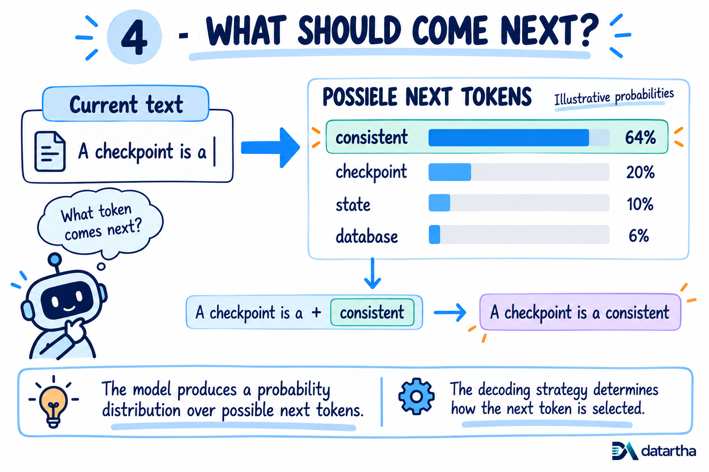
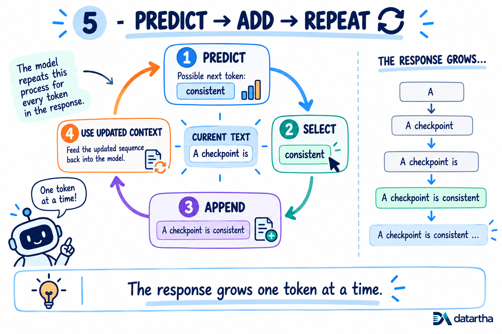
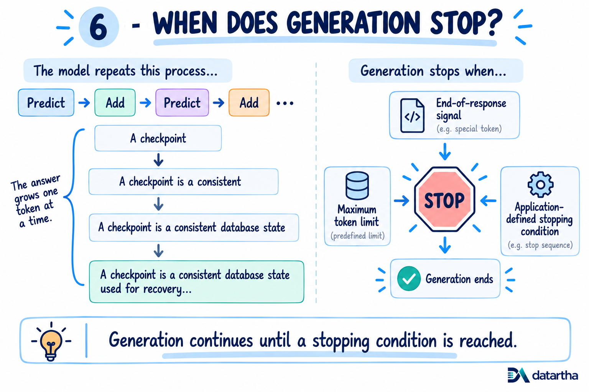
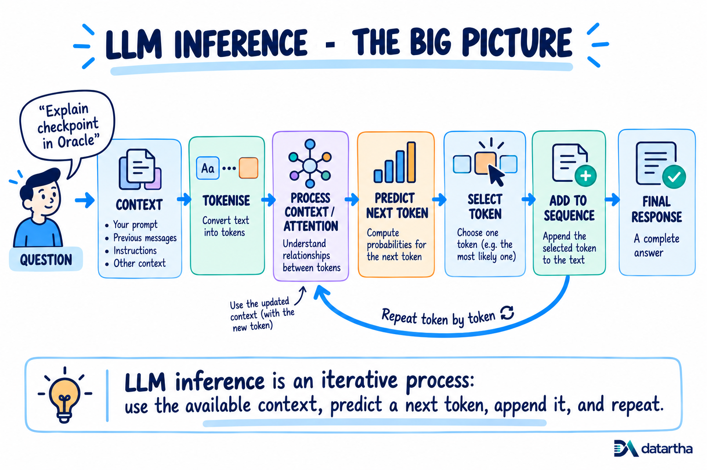

What happens when you ask an LLM a question? Prediction, generation and stopping
Once the context is processed, the model begins a repeated prediction loop that grows the response one token at a time.
5. The model predicts what comes next
Once the context has been processed, the model needs to start generating the answer. It does this by predicting the next token.
The model calculates which tokens could reasonably come next and assigns probabilities to them. For example:
- consistent64%
- checkpoint20%
- state10%
- database6%
These numbers are illustrative, but they show the basic idea. The model selects the next token based on these probabilities and the decoding settings being used.

6. Predict, add, repeat
Suppose the model selects “consistent.” The response now becomes “A checkpoint is a consistent...” That new token is added to the sequence. The model then processes the updated sequence and predicts another token. Then another.
This process is called autoregressive decoding. In simple terms, the answer grows one token at a time.

7. When does it stop?
The model keeps repeating this process until it reaches a stopping point. That could happen because the model produces an end-of-response signal, reaches a token limit or the application uses another stopping condition.
By this point, many individual token predictions have been combined into something that looks like a complete answer. What we see is the final result of that repeated process.

8. Putting it all together
When you ask an LLM a question, you can think of the flow like this:
There is much more happening inside an LLM than this explanation covers. But this is a useful mental model for understanding what happens during LLM inference.

Conclusion: An LLM does not write the whole answer at once. It builds the response step by step, one token at a time.